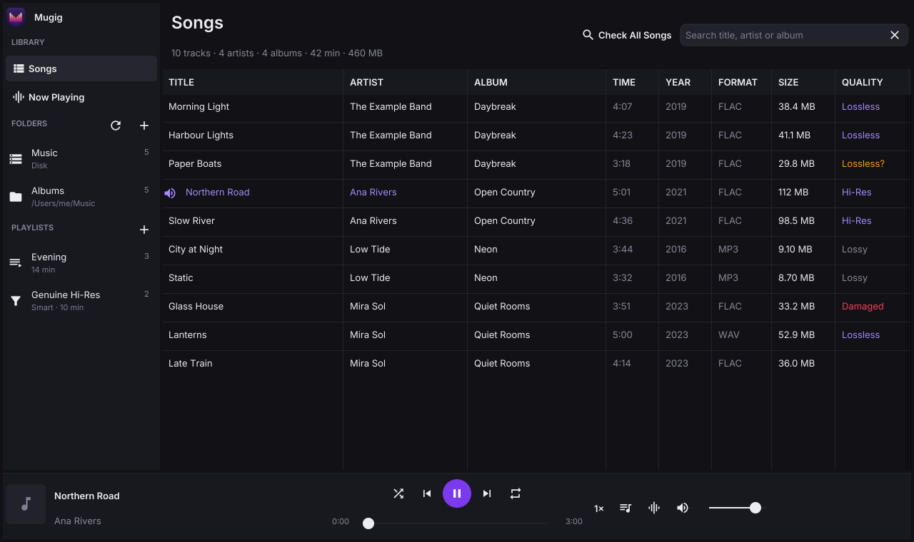
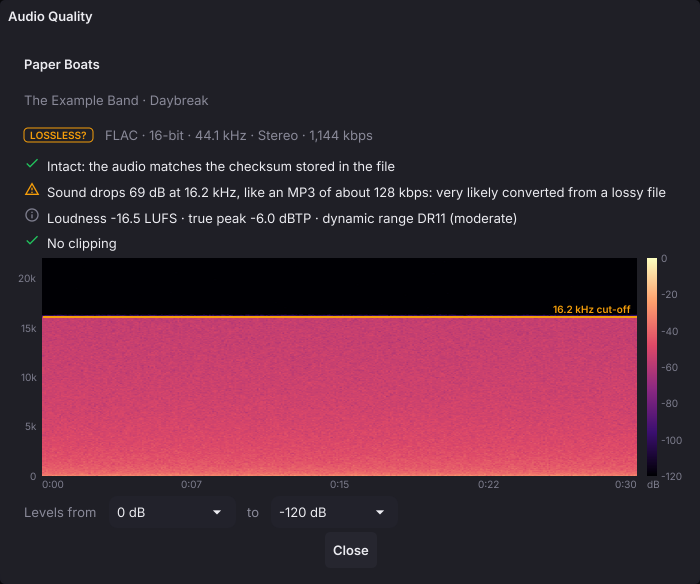
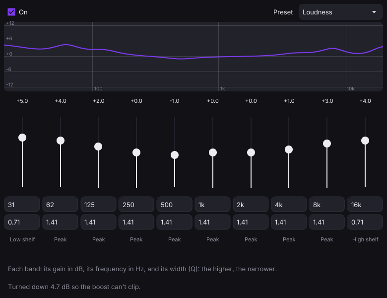
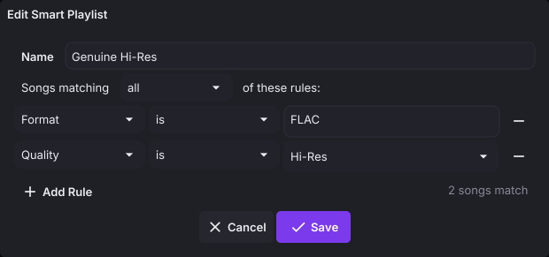

Bit-perfect
The output opens at each song’s own sample rate, and on macOS the device itself switches to it, then switches back when you quit. Now Playing tells you when the sound reaches your DAC unconverted.
Mugig plays your music bit-perfect and gapless, and checks every file while it’s at it: is that “lossless” FLAC really lossless, is it intact, and how loud is it?
macOS · Windows · Linux — made and tested on macOS

Audio quality check
A FLAC made from an MP3 is still an MP3 underneath. Mugig looks at the audio itself, not the file name, and tells you what it finds in plain words.

Check one song, or Check All Songs in the background. Results are saved, so each file is only checked once, until it changes. The Quality column sorts like any other.
Mugig says “very likely” or “probably”, never a made-up percentage. Measured on a real library of 833 files:
A Lossless? verdict is a reason to look at the spectrogram, not proof.
Listening
Nothing touches the sound unless you ask it to. When you do, the tools are the ones serious listeners reach for.
The output opens at each song’s own sample rate, and on macOS the device itself switches to it, then switches back when you quit. Now Playing tells you when the sound reaches your DAC unconverted.
Songs at the same sample rate run straight into each other, so live albums, classical works and DJ mixes play as recorded. The silence MP3 encoders add is trimmed off.
While a song plays, Mugig has your DAC to itself: no system alerts or other apps mixed in, and nothing changing its sample rate behind your back.
Controls → Exclusive AccessEvery band has its own frequency, gain and width, with shelves at the ends, presets and a live response curve. Boosts turn the whole down to match, so loud music never clips.
Controls → Equalizer… ⌥⌘EEach ear hears a little of the other channel, as it would from speakers, so hard-panned music doesn’t sit inside one ear. Light, Medium and Strong, after the bs2b design.
Controls → CrossfeedAnywhere from 0.5× to 2× without the chipmunk effect, for practising along or catching every word. At 1× the audio passes through untouched.
⌘] faster ⌘[ slowerPlaying and resuming fade in over a second, and turning the volume up glides there instead of jumping. Turning it down is instant. At full volume the sound is untouched.
Decoding runs up to three seconds ahead, so a USB disk waking up or retrying a bad spot doesn’t break up the sound.
A corrupt FLAC frame becomes a moment of silence instead of the end of the song, so you can still hear the rest while you find a better copy.

Library
Point Mugig at your music folders, internal, USB or network, and it keeps up with them on its own.
node_modules, hidden folders and the Trash stay out of your library.
Keyboard
⌘ is Ctrl on Windows and Linux.
Get Mugig
Mugig is built from source with Go, on macOS, Windows or Linux.
Go 1.24 or later, and a C compiler, as the window and the audio output use C.
xcode-select --installsudo apt install gcc libgl1-mesa-dev xorg-devClone the repository from GitHub.
git clone https://github.com/yeungon/mugig.git cd mugig
Run it straight away, or package it as an app. The first build takes a few minutes.
make run # build and run make package # build the app (Mugig.app on macOS) make install # macOS: package and copy into /Applications
These collect their results in dist/. Windows and Linux builds use fyne-cross, which needs Docker running.
make mac # Apple silicon and Intel make windows # also windows-arm64 make linux # also linux-arm64 make all-platforms # all three
Mugig is made and tested on macOS. On Windows and Linux it builds and should work, but has had far less use.
These are macOS only: switching the device’s sample rate, exclusive access, the system’s Now Playing controls, the native Open panel that lists all disks, and the macOS decoder used as a second opinion on damaged files.
A player that respects the recording, and tells you the truth about it.